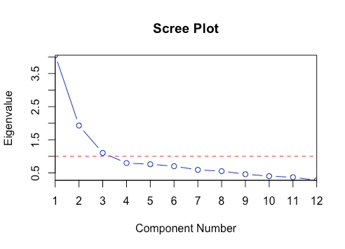

Roni Kobrosly Ph.D.'s Website
written by Roni Kobrosly on 2018-09-24 | tags: machine learning open source
Sometimes when you're tuning a parameter in a machine learning, you end up needing to look at something like a scree plot to determine the best parameter value. It feels annoying and subjective. Here's a simple way to automate this away.
Read on... (377 words, approximately 2 minutes reading time)written by Roni Kobrosly on 2014-12-17 | tags: human data machine learning
When we create maps to view the spatial variation of socioeconomic status, we are typically only viewing the variation of one factor at a time (e.g. just income or just unemployment rate). I thought it would be useful to create and visualize a summary score of overall "socioeconomic disadvantage" from many socioeconomic indicators.
Read on... (175 words, approximately 1 minute reading time)